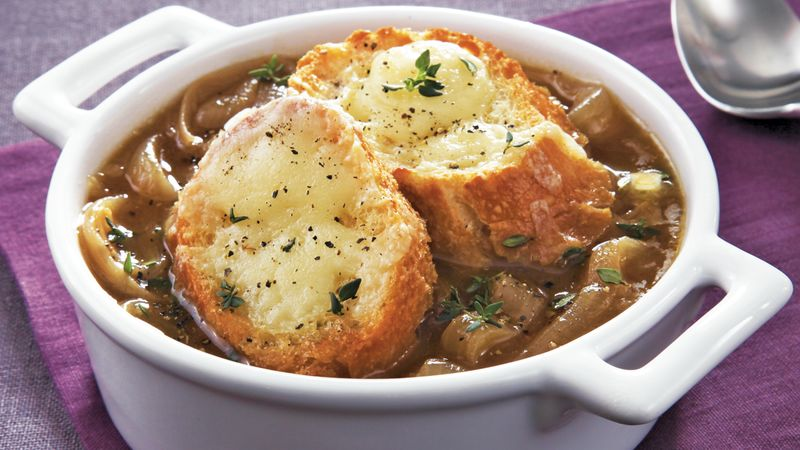

FRENCH ONION SOUP
Western Dish (France)

Takes 1 hour
Makes 4 servings
MAIN DISH
Ingredients
- 1/2 cup unsalted butter.
- 2 tablespoons olive oil
- 4 cups sliced onions
- 4 (10.5 ounce) cans beef broth
- 2 tablespoons dry sherry (optional)
- 1 teaspoon dried thyme salt and pepper to taste
- 4 slices French bread
- 4 slices provolone cheese
- 2 slices Swiss cheese, diced
- 1/4 cup grated Parmesan cheese
Instruction
- 1. Melt butter with olive oil in an 8 quart stock pot on medium heat. Add onions and continually stir until tender and translucent. Do not brown the onions.
- 2. Add beef broth, sherry and thyme. Season with salt and pepper, and simmer for 30 minutes.
- 3. Heat the oven broiler.
- 4. Ladle soup into oven safe serving bowls and place one slice of bread on top of each (bread may be broken into pieces if you prefer). Layer each slice of bread with a slice of provolone, 1/2 slice diced Swiss and 1 tablespoon Parmesan cheese. Place bowls on cookie sheet and broil in the preheated oven until cheese bubbles and browns slightly.
SOURCE : www.allrecipes.com
Add to Cart
want to try this recipe? order ingredients now!